因為橋下是小溪跟很多石頭組成的河床，這些石頭都是有稜有角的，就算在底下用睡墊隔開，也會睡的很不平穩。
所以我就想說睡在水泥斜坡的地方好了，坡度大概三十度，躺著應該還蠻舒服的吧？
結果一躺下去就不停的往下滑，還沒睡著的時候是用腳撐在地上，才讓自己保持不要再往下滑動，結果睡著之後就不行了。
隔天早上在晨曦的照映下醒來，整個人已經睡在石頭和乾硬掉的便便堆之中，只剩脖子以上還停留在水泥地上。
反正還睡過比這更差的，這不算什麼，躺在睡袋裡面想要賴床一下，因為外面的空氣好冰冷，抬頭往上看行李堆，都還安然的在原處。
昨天雖然一直狂打閃電，可是沒有下雨，早晨烏雲也散開了，今天又是一個涼爽的好天氣。
當我估計著能夠賴床多久的時候，聽到旁邊傳來咩咩叫的聲音，聽那此起彼落的聲音，想必數量驚人。
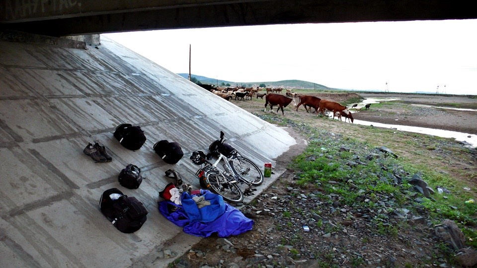
爬出帳棚將包包也都拿下來，放牧的隊伍正好從我身旁通過，好多的牛、羊、馬，應該有好幾百隻，橋下這些便便就是你們的貢獻。
一早起床就看到這樣的奇景，真懷疑自己還在做夢哩。
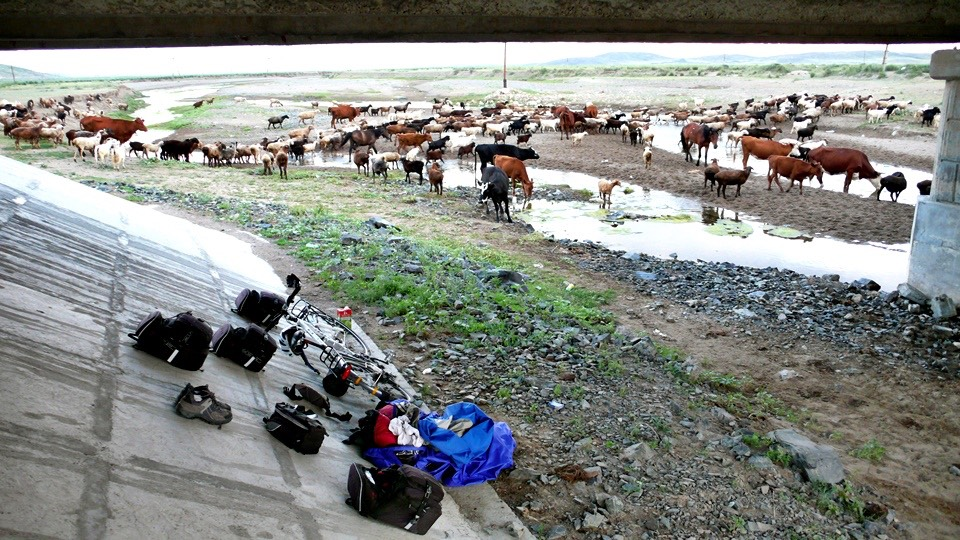
牧羊人騎著馬在最後頭，發現我在橋下呆站著，很熱情的揮手跟我打招呼，還問我說在橋下有睡得好嗎？
『睡的還可以，謝謝！』目送他和牛、羊、馬的隊伍離開。

今天被叫起床的方式還真特殊，既然醒來了，那就別賴床了，開始收拾零散的行李和露營的裝備吧。
早上六點半就啟程，目標是一百三十公里之外的卡拉干達，一座很大很大的城市。
計劃是下午三點可以抵達，然後會在那邊找到網路，連接回WWW的世界。
雲層佔據了七成的天空，今天騎車不需要戴帽子和口罩擋太陽，早餐喝了蘋果汁，配上餅乾。
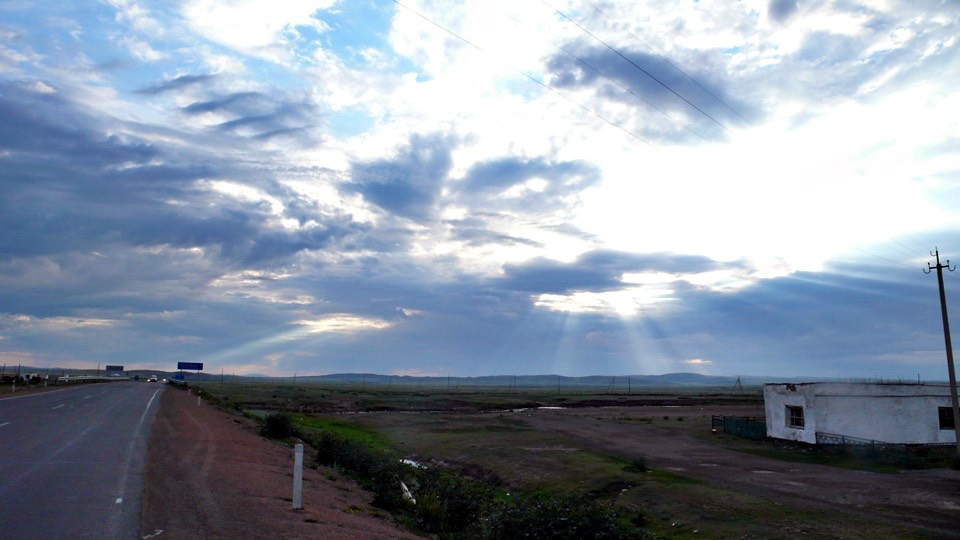
吃著昨天魯德蘭塞進腰包裡的糖果，這些糖果不論包裝有多大的差異，拆開之後裡面千篇一律全都是巧克力。
而且都是超級甜的那種，每吃一個，牙齒彷彿因為這些巧克力而鬆動了。
越往北走，路旁的荒原漸漸有了生機，不再是枯黃一片的短草，而是各式各樣的植物都有。

構成了一整片的草原，而且處處都開著藍、黃、紅、白顏色的小花，隨著風搖曳很漂亮。
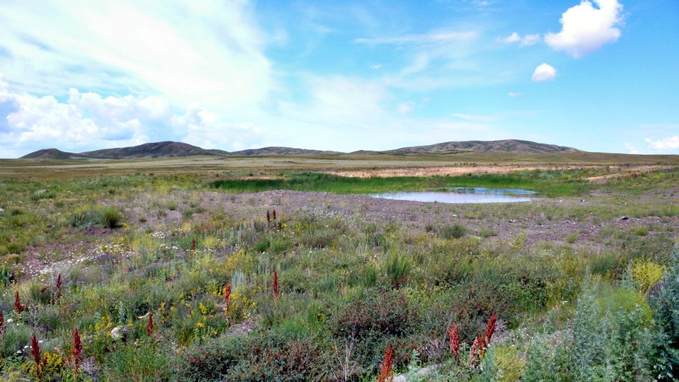
植物的種子都很愛跟人走，很多長在路邊的花花草草，當我騎車累了停下來休息的時候，腳都會去碰到。
馬上就沾黏上一堆的種子，用拍的絕對拍不掉，要一顆一顆拔下來，不然這條褲子穿到巴黎，這些種子還是在上頭。
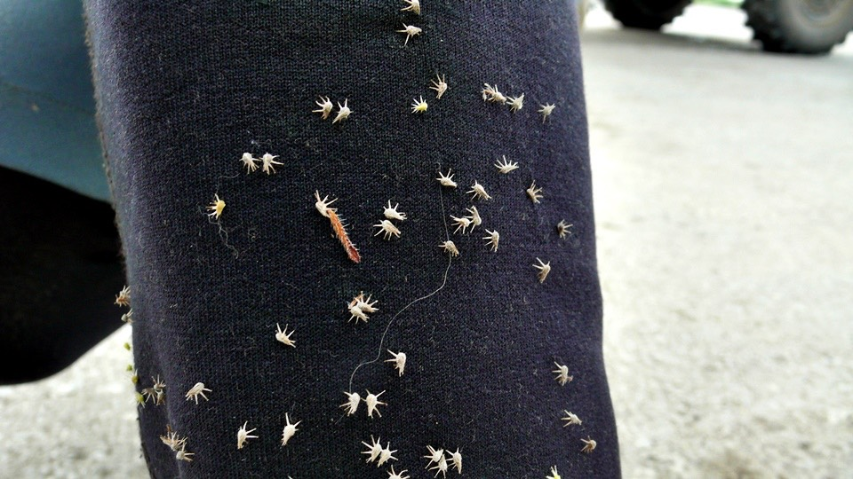
這一台應該是收割牧草給動物吃的機器，也有可能是翻土用的，但是翻土要幹嘛呢？這些又沒有田地。
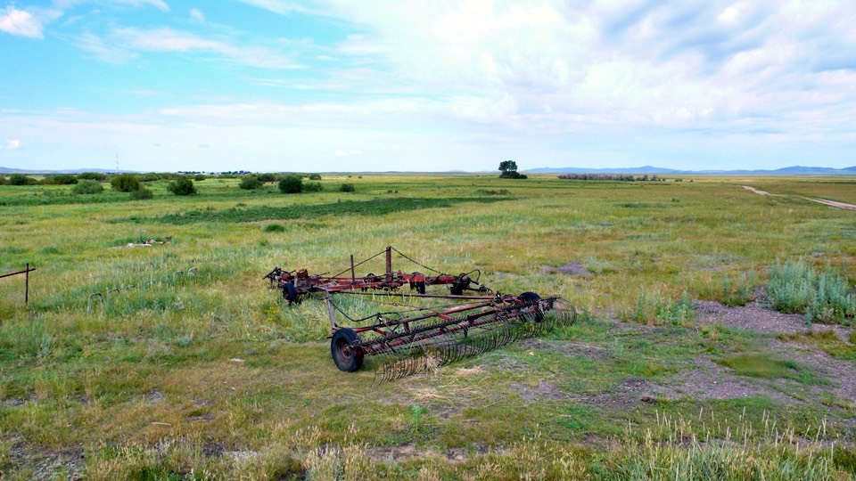
出發三個小時之後，看到了營業中的餐廳，終於可以享受一頓豐盛的早午餐，還有熱熱的奶茶沖淡一下嘴裡巧克力的味道。
餐廳的門口掛著很可愛的牌子，上面還畫著一隻狗，很明顯是『內有惡犬、請小心』的告示牌。
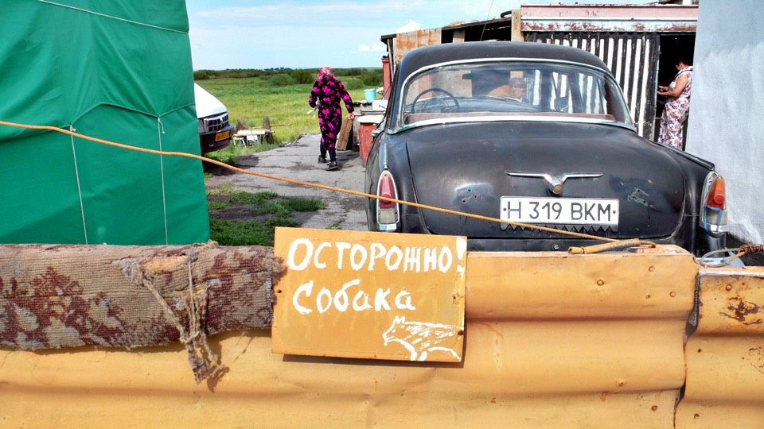
早午餐吃得很豪華，像是煎過的多汁牛排切片的美味牛肉，配上洋蔥、黃瓜、番茄在灑上綠色的香料，這一盤實在是美味到我連盤子都舔乾淨了。
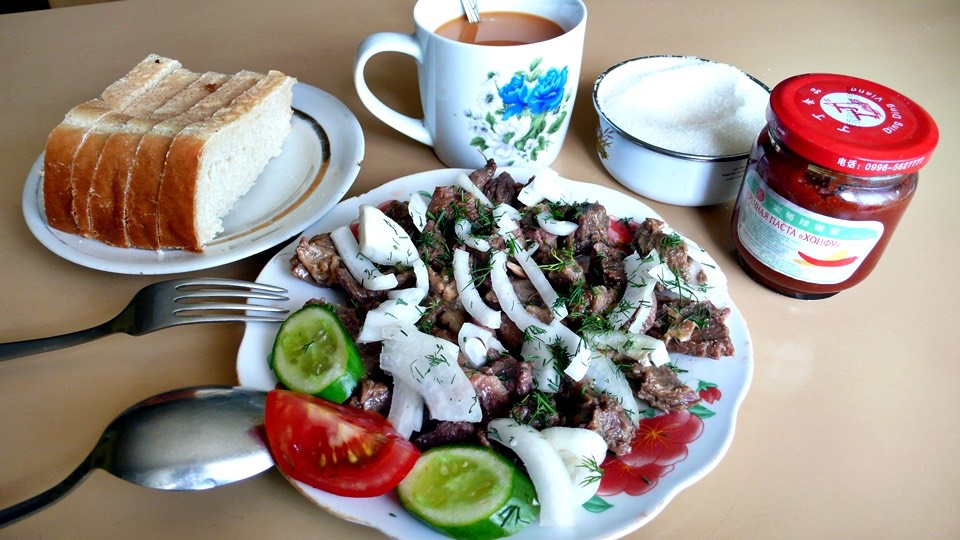
餐廳的老闆說昨天有兩個像我這樣騎單車的人，往另一邊走。
原來昨天遇到那兩個要去游泳的人，也在這間餐廳吃過飯休息，真是好巧呀～
老闆有事要去城裡，所以吃飽後我不能在店裡多做停留，他們急著關店出發。
結果就忘了在臨走前買一瓶水帶著喝，蘋果汁已經被消耗完了說。
但沿路上最多間隔十公里就會有房舍出現，想買個喝的止渴還不困難，在一間長方形的小餐廳停了下來，
本來想除了買水之外，接著繼續吃午餐，但這裡什麼都沒有，已經是半歇業狀態，老闆還是很好心的將空空的水壺裝滿水。
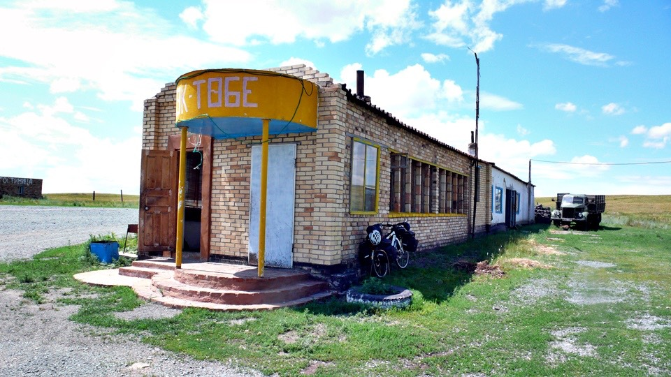
漸漸有離開山區的感覺，筆直又平緩的下坡路帶著我快速的往大城市移動。
路邊看到有軍人持槍在站哨，這種荒郊野外站什麼哨，吃太飽嗎？靠近之後才發現只是座雕像。
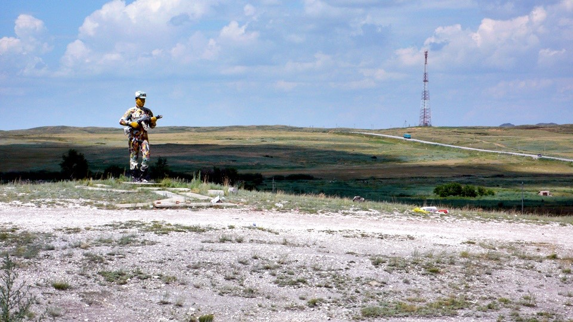
還剩下二十幾公里的時候，大老遠的就能看見城市的輪廓，因為實在太大了。
樓房雖然不高，但是人工的建築物在自然景觀裡特別明顯，通往市區的道路也是豁然的展開，不僅路面變好，車道也增加。
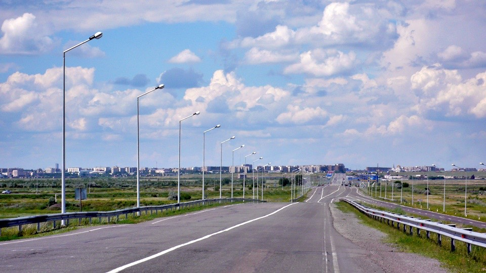
終於抵達大城市了！萬歲！萬歲！網路我來了！
在這邊晃了兩個小時，眼光無時無刻都在搜尋有沒有網路的招牌，不停的問警察和路人這邊哪裡有網路咖啡廳。
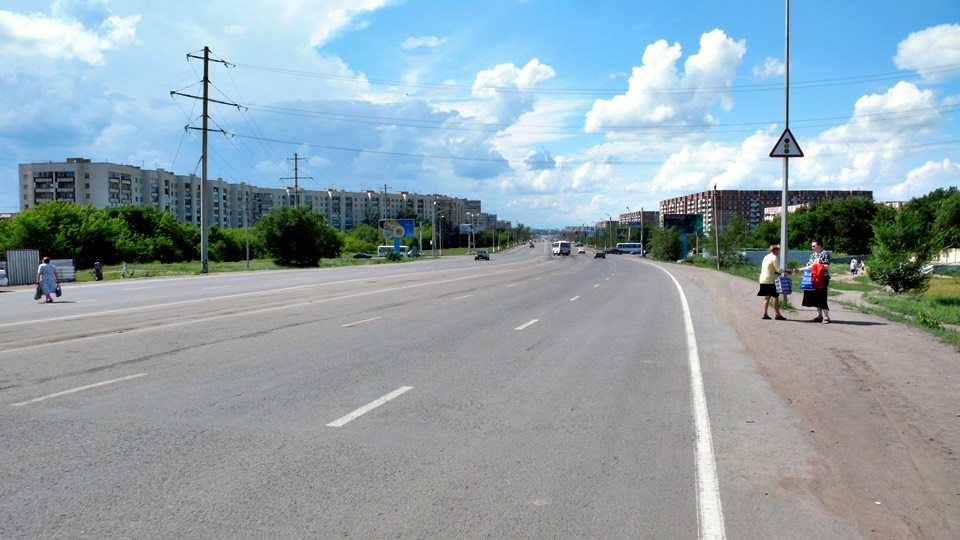
手上拿著筆記型電腦，每一百公尺就停下來搜尋看有沒有訊號可以使用。
一開始我認定絕對百分之百能在這裡找到網路，畢竟是一個這麼樣大的地方呀！
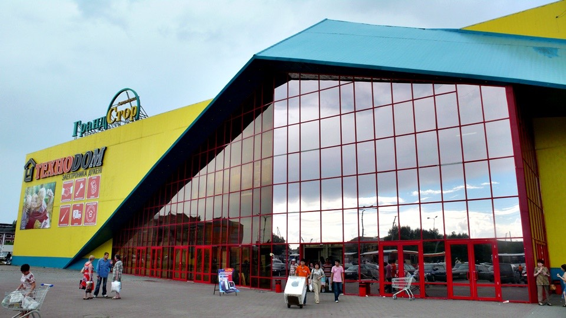
各式各樣的購物商場一個接連一個，路上的行人數量超多，大型建築物也是櫛比鱗次，像這樣的城市怎麼可能會沒有網路呢？
但是我真的找不到T_T
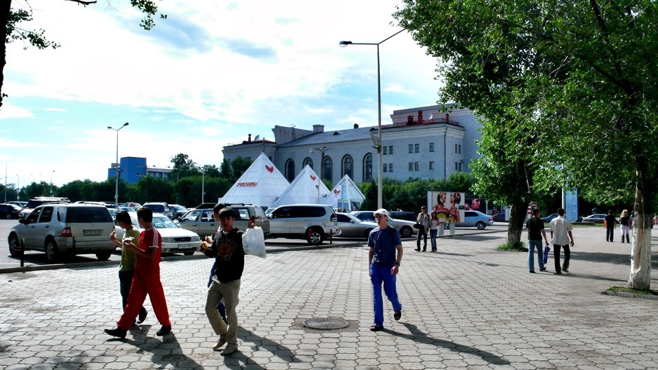
哈薩克文的『網路』，我已經會背了，但招牌上最接近網路的，只讓我找到windows的標誌。
問了至少一打的步行巡邏警察，街邊的情況沒有人比他們還了解吧，沒有人知道哪裡有網路。
筆記型電腦沿路搜尋無線網路的訊號，有找到幾個，可是怎麼樣也沒辦法連線成功。
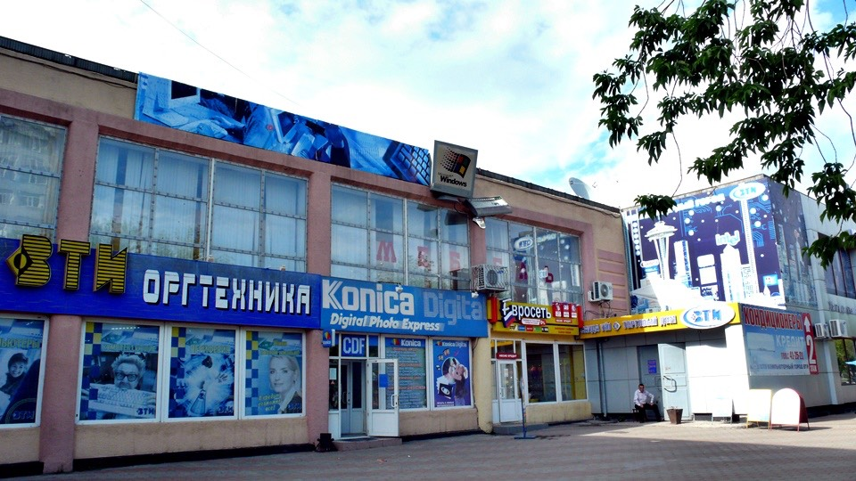
就這麼在市區耗掉了兩個小時，一無所獲，重返WWW世界的夢想就這麼落空了。
難道一定要到了首都之後才會有網路可以用嗎？ orz
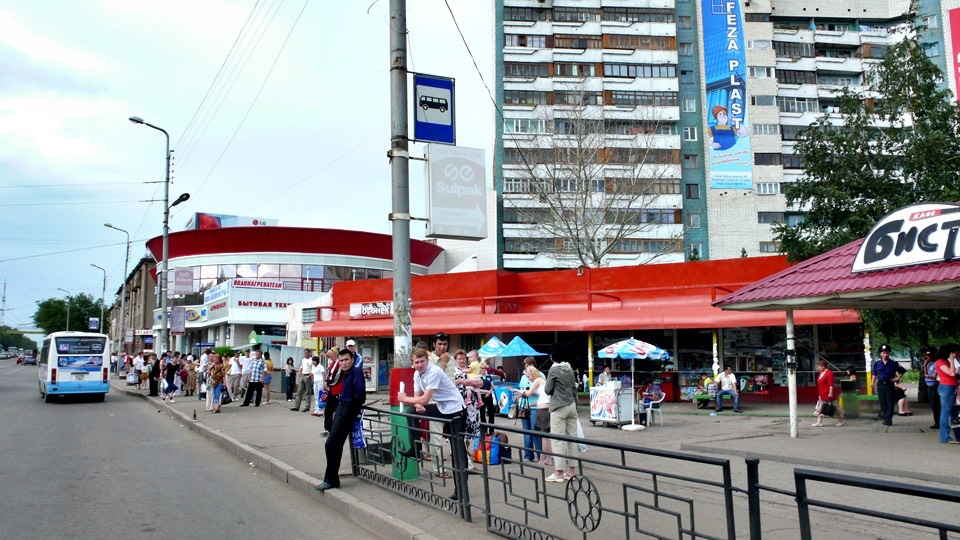
邊找網路的時候邊做了城市觀光，這邊真得很大，頗有歐洲的感覺，只是沒有太古典的教堂、宏偉建築那一類。
火車站的月台很熱鬧，等著上下車的人非常多。
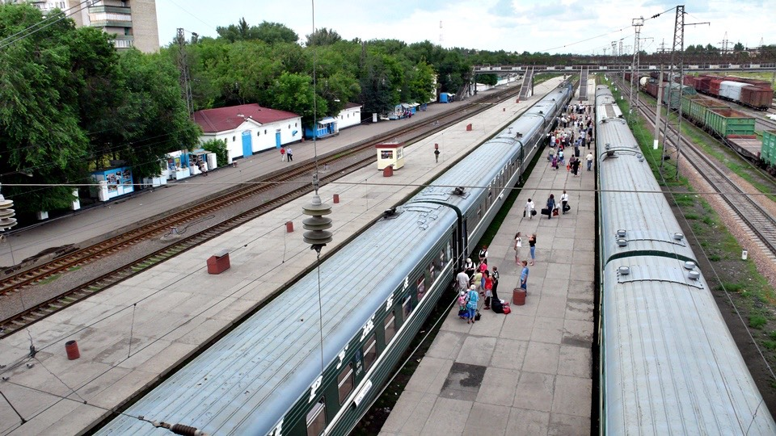
在城市裡，人們住的房子不再是獨棟的大房子，門口還能養牛的那種。
而是通通住進公寓之中，城裡最高的建築物大概就是公寓了，這些公寓看起來真像是某一種怪獸的巢穴，稍微一驚動就會傾巢而出。
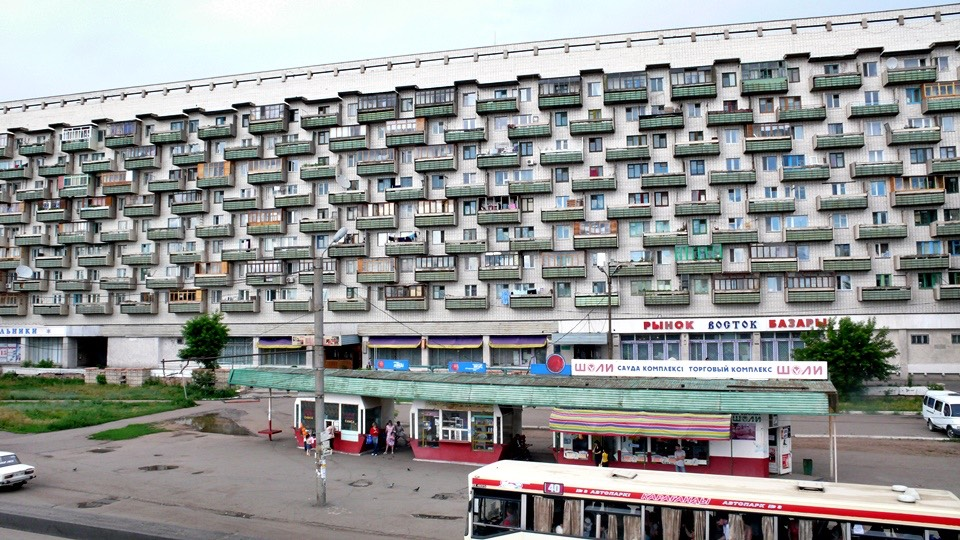
馬路很大條，路上也有紅綠燈，而且大家真的都會遵守，所以哈薩克是個有法治的好國家。
路邊的警察數量極多，十個裡面有七個都在開交通罰單，剩下三個則讓我問路用。
這邊也有很多的雕像、造型柱子之類的東西，這個雕象看起來超像是星際大戰裡的尤達大師。
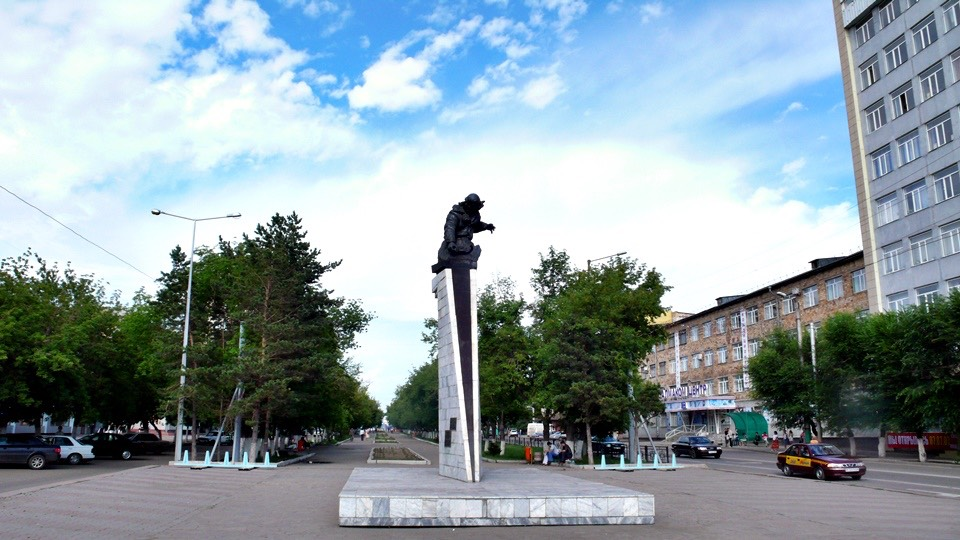
還有應該是列寧的石像，或是這個國家的總統年輕的時候。
城裡面很多總統的大型廣告，白花花的頭髮、穿著西裝、面帶微笑，站在農田中或是礦工的前面，但看起來都是將穿西裝的人合成到景物裡。
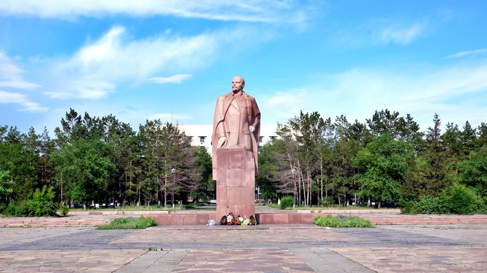
大城市的象徵噴泉是一定不能少的，除了噴泉之外。更重要的是噴泉這一區的整體設計，是不是能讓市民在此享受休憩的時光。

我一直以為哈薩克是沒有郵政系統的，到處都沒看到郵筒，住宅門口也不見有人擺著信箱，從來沒看過郵局的車子，郵差根本不存在。
但這個國家確實是有郵局的，村上說義大利的郵局是笨蛋機關，郵局會把同一個人的信累積到一定數量之後才拿去投遞，因為這樣比較方便。
不知道哈薩克郵局的效率怎麼樣？
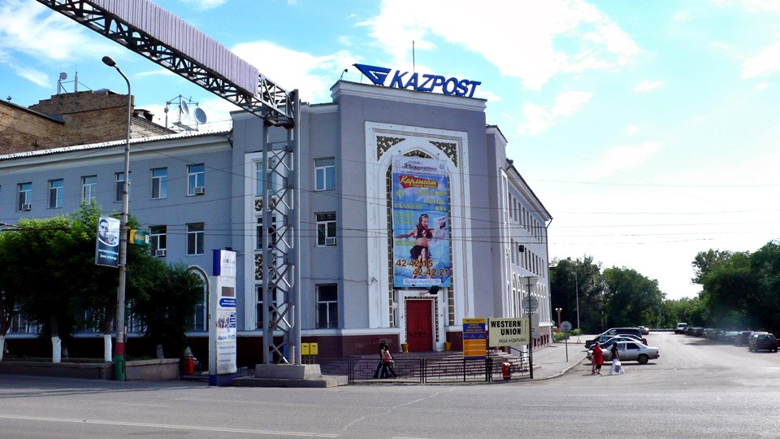
城裡另外一棟建築物，上面擺著六尊石像，塑造了六種職業的形象。
我能分辨出來的是音樂家、學者、農夫、軍人、牧民，最左邊那一個手舉的高高的，該不會是政治家吧？
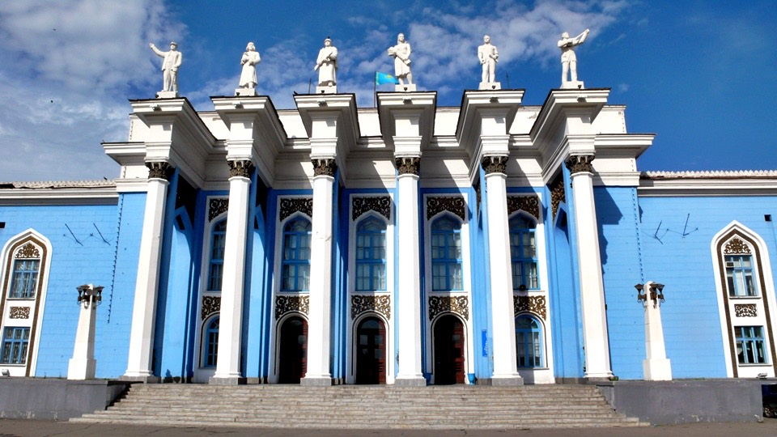
忙著找網路訊號，連午餐都沒有吃，最後一次用餐是早上九點半，現在已經下午五點半了，肚子又開始咕嚕咕嚕的叫。
因為找不到網路，所以就不打算停留在這個城市，沿路上看到很多間旅館，但是我連進去問多少錢都懶的問。
離開城市前在公車站牌旁的商店買了飲料、洋芋片和巧克力餅乾，然後就要跟大城市說掰掰了。
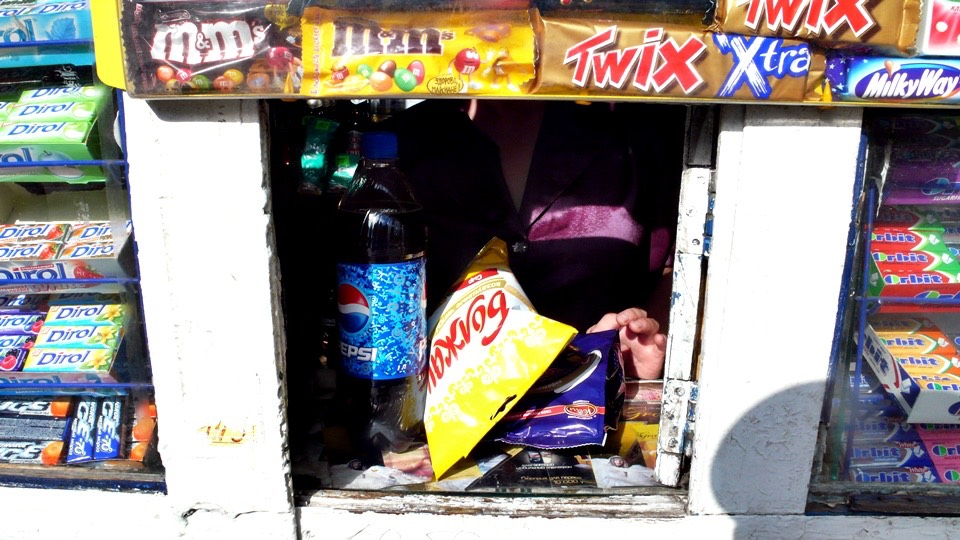
拆開洋芋片邊騎車邊吃，被一個奇怪的招呼聲音嚇了一大跳，吃了半包的洋芋片都掉到地上去了。
因為我騎在車道的右邊，然後頭往左邊看著風景，本來沒有人的右邊，突然傳出聲音，我還以為要撞上什麼人了說。
這是第三個遇到的哈薩克旅行者，他已經不知道從哪邊騎回來，準備要回家去了，旅行超輕便的，所有的東西就只有一個小背包。
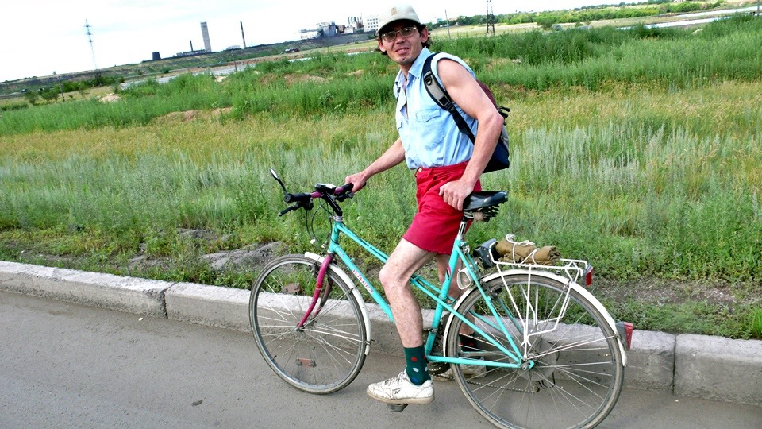
接近郊區的時候，這邊的地上長滿了一坨一坨的白毛球，隨處可見。
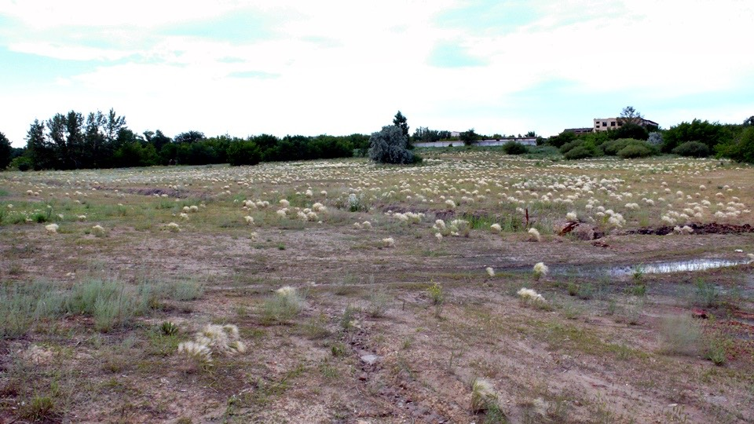
而白毛靠近一看則是這樣的植物，近看很不毛。
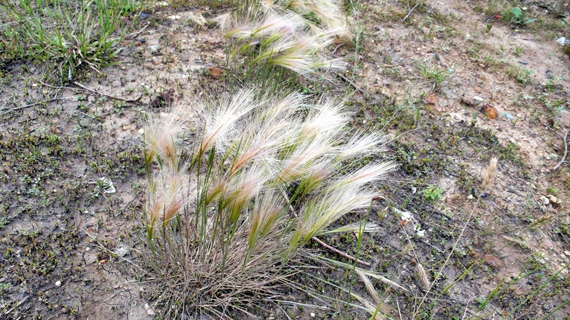
市區的消費高，那我就往郊區走， 房舍瞬間又變的破爛。
這個國家的城鄉差距之極大，不親身體驗很難感受的到，打算在這邊吃飯，然後找地方過夜，有旅館就住，沒有就露營。
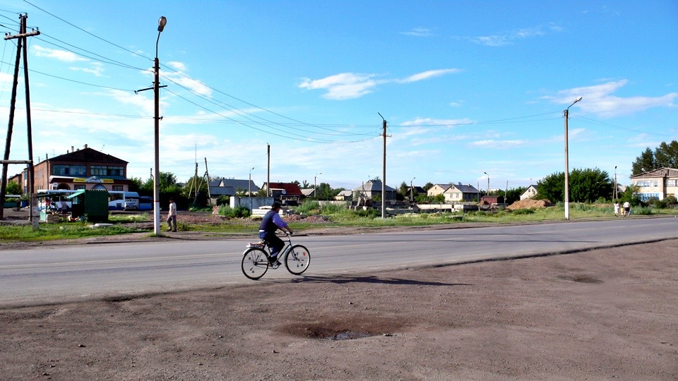
進入郊區之後，發現一間餐廳，站在門口的是店裡的DJ，維特，22歲，俄羅斯人。
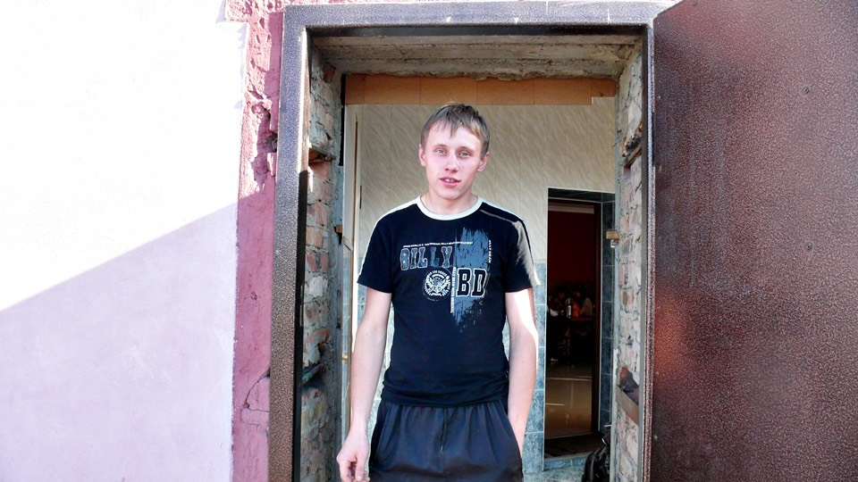
晚餐就吃DJ幫我點的好料，跟之前吃過的東西都不一樣喔，有像是榨菜肉絲麵的湯麵。
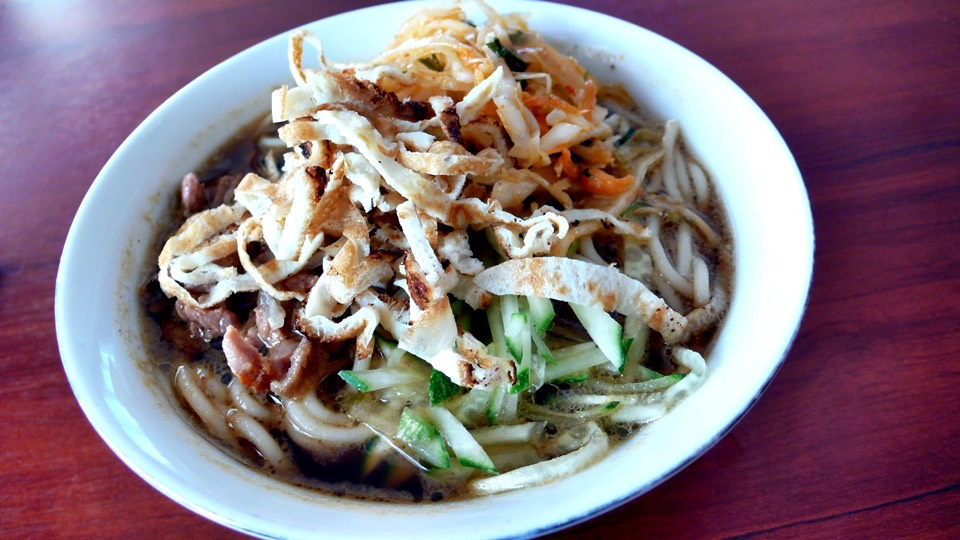
還有很香嫩的炸雞排、配上馬鈴薯泥、豌豆、橄欖。
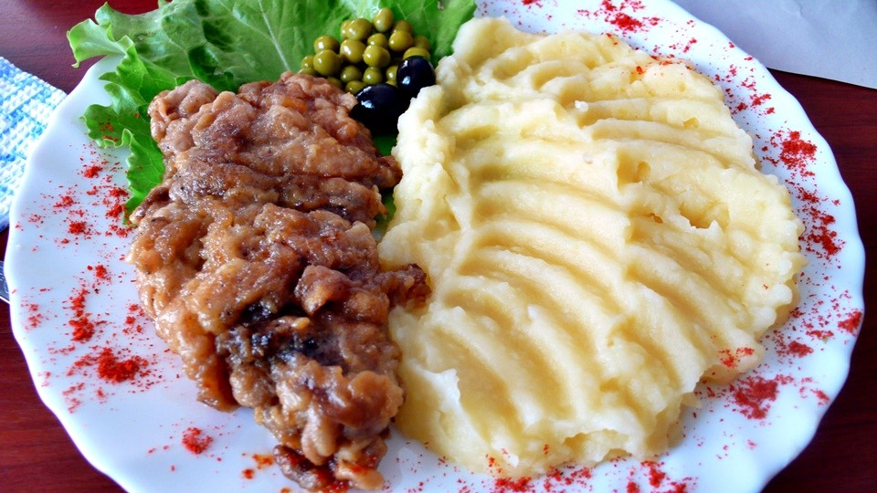
在知道維特是DJ之後，他就拿了一片CD給我看，說這是俄羅斯的音樂，很好聽。
看著印有台灣廠商標誌的光碟片，光是用眼睛看，我怎麼知道這個是好聽還是不好聽呢？
『禮物，送給你，帶著路上聽。』
收下維特的禮物，他的DJ工作晚上九點才開始，想留下來看他表演，可是那時候要是還沒找到過夜的地方就會很麻煩。
維特對小多很有興趣，卸下包包借他騎一圈，當做CD的謝禮。
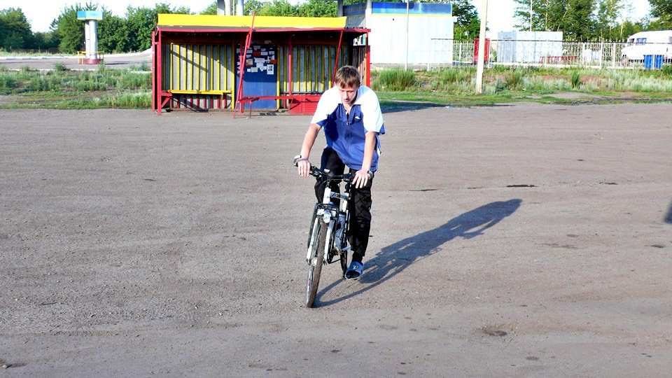
本來想吃過飯之後繼續往郊區的鎮上騎進去找旅館，維特看到我準備進去裡面，把我攔下來，說裡面很危險，是『黑街』。
那邊都是混混和年輕人居多，像我這樣亞洲面孔的旅行者進去，實在太危險了。
抖了一個冷顫，還好剛才有先停在這間餐廳吃飯，不然我已經騎到裡面去找旅館了。
維特在地上畫地圖，教我離開郊區，接著往下一個城市騎，只要十公里而已，不遠，在那邊有旅館，比這裡安全得多。
聽從維特的建議，吃飽後繼續騎一小段路，十公里很近，從上坡就能看見遠處的城鎮。
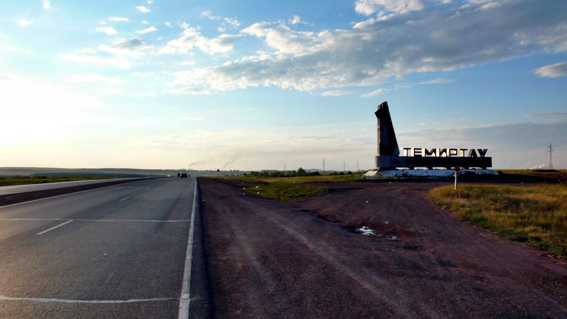
除了城鎮之外，還看見一根根的煙囪，排放著亂七八糟的黑煙、紅煙、白煙。
這是個什麼樣的地方，哪來那麼多的煙可以排放？
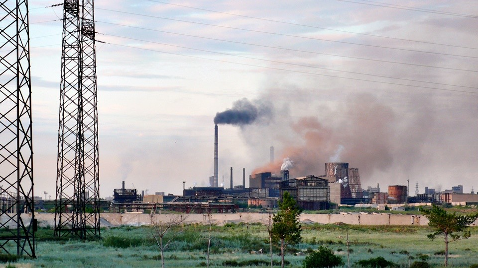
這邊是一個叫做鐵米套爾的城市，鎮上和工廠是分不開的。
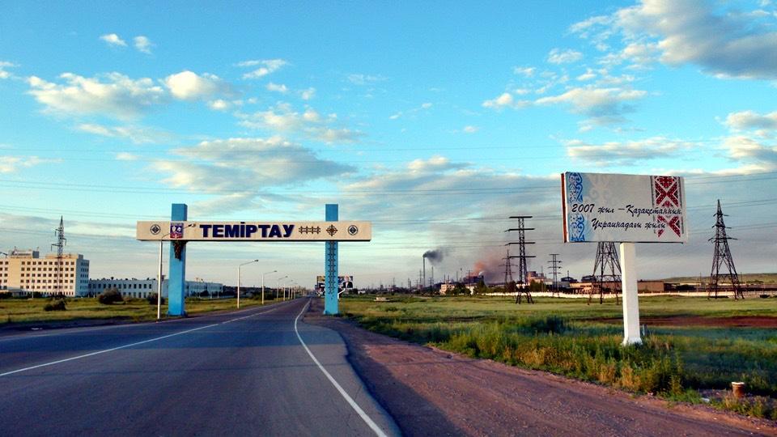
進城之後特地選了繞著工廠的路沿著騎，佔地遼闊的工廠，都是生鏽發黃的老舊機械、鐵架，一根比一根還粗的煙囪冒著五顏六色的廢氣。
這些廢氣怎麼看都是有毒的，就這麼往湛藍的天空不停的排放。
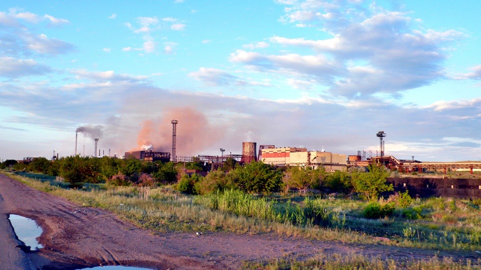
鎮上跑著小型電車，動力是電力，行駛在鎮上錯綜複雜的鐵軌路線上，從車上下來了好幾位的乘客，他們才正要去上班。
這個時候都已經晚上九點了，難道工廠是二十四小時輪班不停運轉的嗎？
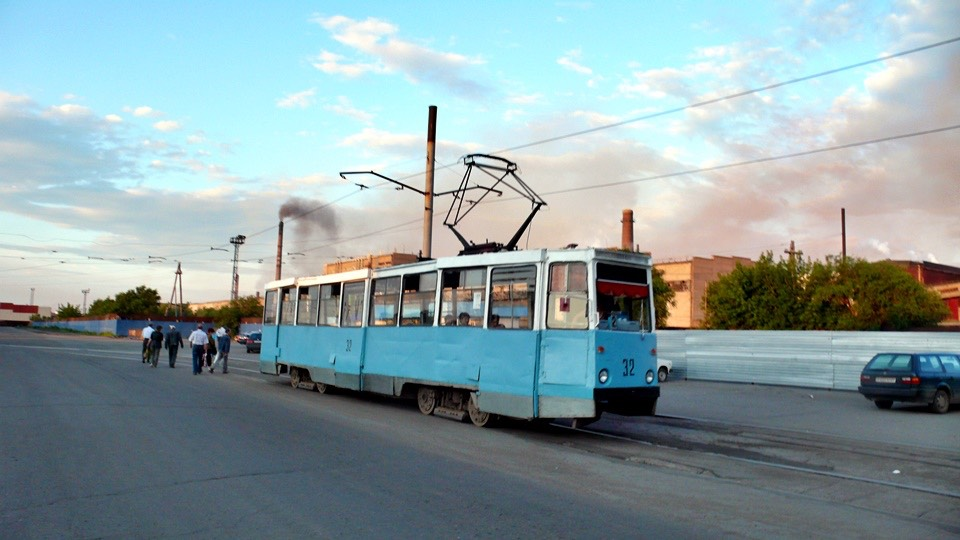
機械就算不休息，起碼也讓接收廢氣的天空喘口氣的時間吧。
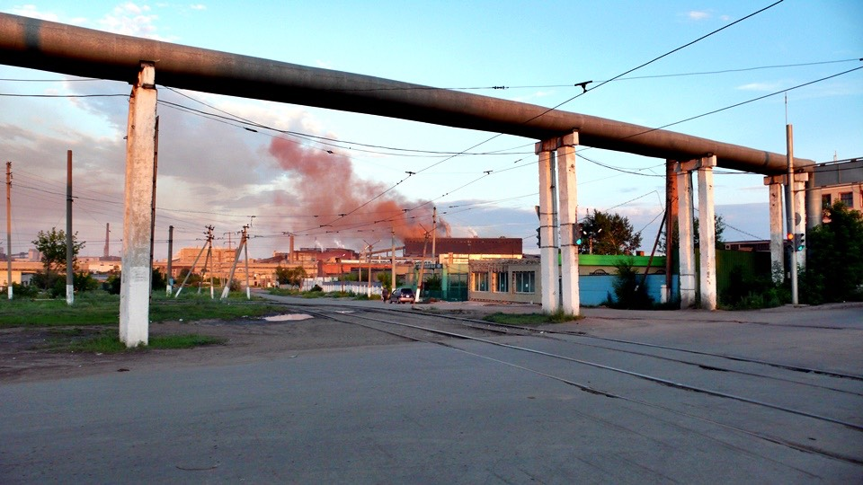
這邊是工廠的大門，沒有招牌或是看板，不知道裡面到底是生產什麼，會需要排放如此大量的廢氣。
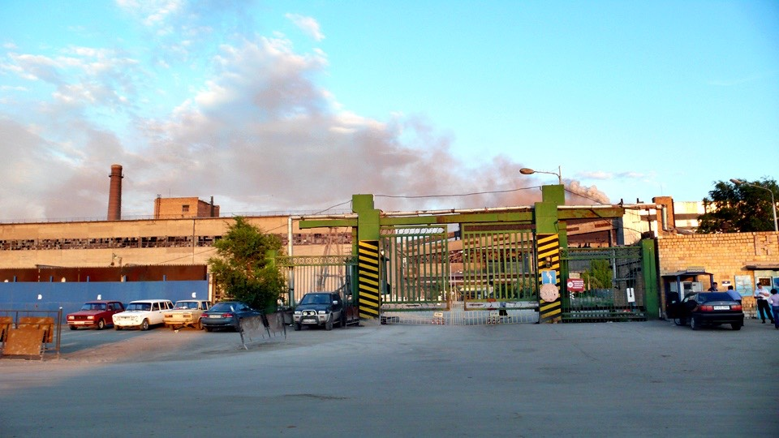
小鎮上處處都鋪設著鐵軌，輕軌列車的壞處大概就是路面會變得很不好走，車道也隨時縮減。
此時太陽已經要下山了，趕緊找過夜的地方吧。
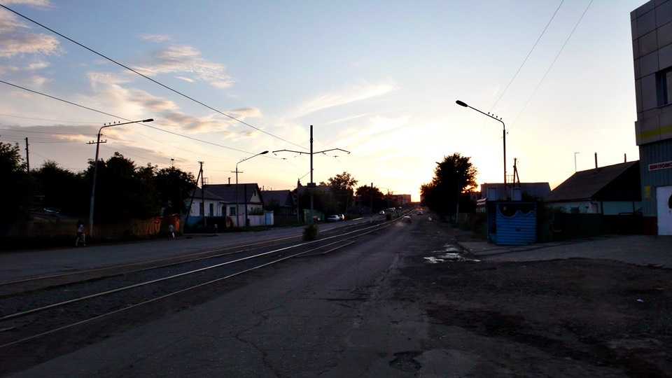
問了路人，整個鎮上唯一一間的旅館，是汽車旅館，外表看起來挺高級的，但是誰會跑到這邊來住呢？
與其擔心別人經營的問題，我比較在意住宿的費用，問價錢之後，店員在紙上寫了兩個數字，三千元和兩千元。
我拿過紙筆，接著在下面寫了一千五百元，店員搖搖頭說不行。
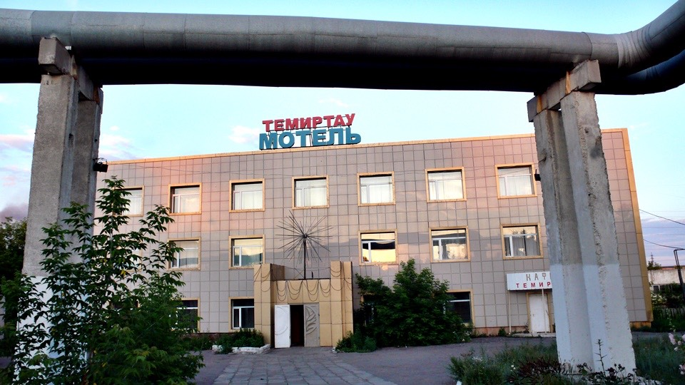
掉頭往回走也沒人攔住我，殺價在這邊行不通，只好走到外頭將小多牽進來，然後指著紙上的兩千元，我要這一間。
房間很大，將近十五坪，大的有點誇張，床也是巨無霸的雙人床，還有沙發跟茶几。
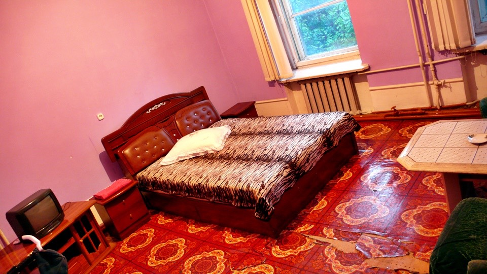
但這些都只是假象而已，地上鋪的不是地磚，而是已經剝落的塑膠貼紙，浴室沒有熱水，這一點我就很在意。
去櫃檯那邊反應沒有熱水的問題，他們則表示熱水沒有他們也沒辦法，要嘛我就不要洗，要嘛就洗快一點。
真是的，一晚上才四百塊的旅館就可以洗舒服的熱水澡，兩千元的則要用冰水擦身體。
昨天睡在橋下，不算太糟但也沒睡得多好，早上六點多就開始騎車，騎到晚上九點，超過一百八十公里，體力耗盡。
用冰水擦過身體之後，躺在床上很想要寫今天的遊記，但是眼皮一直闔起來，睏得沒辦法，只好關上電腦，先睡覺再說。
夜裡蚊子和蒼蠅齊飛，很擾人安眠，明明是睡在旅館裡面，我還是拿出了帳棚放在床上睡覺，這樣蚊蟲就騷擾不到我。
為了找一個有床有屋頂的地方過夜，這個代價還真是不划算。
繼續閱讀：7.9 晴天‧雨天
哈薩克-堅戈－ 1：0.26 台幣
7.8
總計：3345元
早午餐烤牛肉、奶茶、麵包420元、可樂120元、餅乾、飲料275元、晚餐肉絲麵、炸雞排馬鈴薯泥、奶茶、麵包530元、旅館2000元